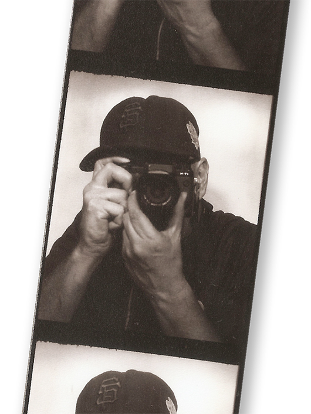

73

WHY?
I bought a new camera awhile back and at the time, I was scared that I would buy it and never use it. So, I made a deal with myself that I’d try and go out at least once a week for a year and try and take a good photo. I came close. I missed one week when I had an unexpected death in the family and there were times here and there when I sort of phoned it in, but for the most part I’m happy with my effort and kept going once the year was over although I take a week off every once in awhile.